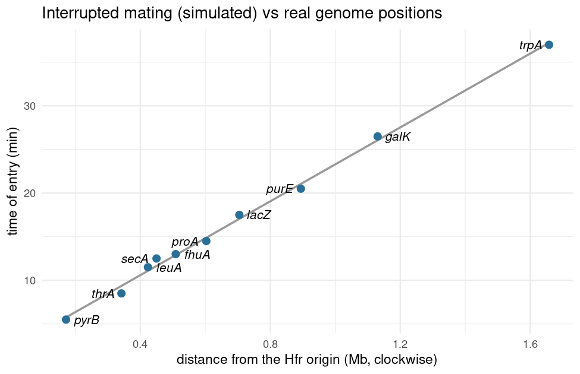

Exercise in R: bacterial genetics (recap)
Goal
By the end of this exercise you should be able to:
- turn interrupted-mating times into a gene order and distances in minutes;
- join the markers to real E. coli gene positions with
left_join, and handle the circular chromosome with the modulo operator%%; - fit minutes against megabases with
lm, and use the fit to predict when other genes would enter.
Before you start
This page builds on the by-hand part of the Exercise, so do that first. You need the packages readr, dplyr and ggplot2. Download the two data files and save them in a data/ folder of your R project:
- hfr_entry.csv: times of entry for ten markers in an interrupted-mating experiment. These are simulated teaching data, not a real experiment: they were computed from the real gene positions for a hypothetical Hfr whose origin of transfer lies near 4 300 000 bp and which transfers towards increasing coordinates, with some random noise added. The comment lines at the top of the file say so.
- ecoli_genes.csv: real positions of 18 classic mapping markers in E. coli K-12 MG1655 (chromosome NC_000913.3, 4 641 652 bp), from NCBI Gene, retrieved 2026-11-20. Each classic marker (
lac,str, …) is matched with one gene (lacZ, rpsL, …). See data/README.md.
library(readr)
library(dplyr)
library(ggplot2)Tasks
This unit reuses two things you already know: left_join from Part 4, and lm from 5KE232. One small new piece is the modulo operator %%: a %% b is the remainder after dividing a by b, so (x - origin) %% genome_length is the distance from the origin going round the circle, even when the gene’s coordinate is smaller than the origin’s.
R1. (order and distances) Read hfr_entry.csv. The file starts with comment lines, which comment = "#" skips. Sort the markers by time of entry and add the gap to the previous marker with lag(). What is the gene order? Which two markers are closest?
hfr <- read_csv("data/hfr_entry.csv", comment = "#", show_col_types = FALSE)
hfr_map <- hfr |>
arrange(time_of_entry_min) |>
mutate(gap_min = time_of_entry_min - lag(time_of_entry_min))
hfr_map
paste(hfr_map$marker, collapse = " - ")R2. (join to the genome) Read ecoli_genes.csv and join it to hfr_map by the column marker. Then compute each gene’s distance from the Hfr origin (4 300 000 bp) in Mb, going in the direction of transfer (increasing coordinates) and round the circle. Why does thrA, at 337 bp, come out at 0.342 Mb and not at a negative distance?
genes <- read_csv("data/ecoli_genes.csv", show_col_types = FALSE)
genome_length <- 4641652
origin <- 4300000
both <- hfr_map |>
left_join(genes, by = "marker") |>
mutate(dist_mb = ((start - origin) %% genome_length) / 1e6)
both |> select(marker, gene, time_of_entry_min, start, dist_mb)R3. (minutes against megabases) Fit a straight line of time of entry on distance with lm. What are the slope (minutes per Mb) and the intercept? Turn the slope into kb per minute. Then plot the points with the fitted line and gene labels.
fit <- lm(time_of_entry_min ~ dist_mb, data = both)
coef(fit)
summary(fit)$r.squared
1000 / coef(fit)[["dist_mb"]] # kb per minute
# labels alternately right and left of the points, so close neighbours do not overlap
both <- both |> mutate(label_hjust = if_else(row_number() %% 2 == 0, 1.3, -0.3))
ggplot(both, aes(x = dist_mb, y = time_of_entry_min)) +
geom_smooth(method = "lm", formula = y ~ x, se = FALSE, colour = "grey60", linewidth = 0.8) +
geom_point(size = 2.5, colour = "#2a6f97") +
geom_text(aes(label = gene, hjust = label_hjust), fontface = "italic", size = 3.5) +
labs(x = "distance from the Hfr origin (Mb, clockwise)",
y = "time of entry (min)",
title = "Interrupted mating (simulated) vs real genome positions") +
theme_minimal()R4. (predict) How long would this Hfr need to transfer the whole chromosome (use the slope only)? Use predict() to estimate when his and str would enter. Why is str a good counterselection marker for this Hfr, and why would you rarely see his+ recombinants in practice?
genome_length / 1e6 * coef(fit)[["dist_mb"]] # minutes for the whole genome (without the lag)
far <- genes |>
filter(marker %in% c("his", "str")) |>
mutate(dist_mb = ((start - origin) %% genome_length) / 1e6)
far |>
mutate(predicted_min = predict(fit, newdata = far)) |>
select(marker, gene, dist_mb, predicted_min)R5. (the minute map) Convert every gene in ecoli_genes.csv to map minutes, 100 × start / genome length, and print the table. Where is the origin of our Hfr, in minutes? Check two or three of the values against the classical map positions you know from the lecture (lac ≈ 8, trp ≈ 28, his ≈ 45 min).
genes |>
mutate(map_min = round(100 * start / genome_length, 1)) |>
select(marker, gene, start, strand, map_min) |>
print(n = Inf)
100 * origin / genome_lengthSolutions
All output below is from Rscript --vanilla run in the unit folder. Messages from loading packages are not shown.
R1.
# A tibble: 10 × 3
marker time_of_entry_min gap_min
<chr> <dbl> <dbl>
1 pyr 5.5 NA
2 thr 8.5 3
3 leu 11.5 3
4 azi 12.5 1
5 ton 13 0.5
6 pro 14.5 1.5
7 lac 17.5 3
8 pur 20.5 3
9 gal 26.5 6
10 trp 37 10.5
[1] "pyr - thr - leu - azi - ton - pro - lac - pur - gal - trp"The order is pyr – thr – leu – azi – ton – pro – lac – pur – gal – trp. The first gap is NA, because the first marker has no previous marker. azi and ton are closest (0.5 min, about 23 kb). With times rounded to 0.5 min and some noise, very close markers can even swap order; that is why fine mapping uses cotransduction instead.
R2.
# A tibble: 10 × 5
marker gene time_of_entry_min start dist_mb
<chr> <chr> <dbl> <dbl> <dbl>
1 pyr pyrB 5.5 4471460 0.171
2 thr thrA 8.5 337 0.342
3 leu leuA 11.5 81958 0.424
4 azi secA 12.5 108279 0.450
5 ton fhuA 13 167484 0.509
6 pro proA 14.5 261503 0.603
7 lac lacZ 17.5 363231 0.705
8 pur purE 20.5 552591 0.894
9 gal galK 26.5 788831 1.13
10 trp trpA 37 1316416 1.66337 − 4 300 000 is negative, but the chromosome is a circle: going forward from the origin, you pass the end of the sequence (4 641 652, which is the same point as 0) and reach thrA after 4 641 652 − 4 300 000 + 337 = 341 989 bp. %% does exactly this: (-4299663) %% 4641652 is 341 989. The real gene order from the genome is the same as the order from the entry times.
R3.
(Intercept) dist_mb
2.117787 21.173664
[1] 0.9966286
[1] 47.22848
The slope is 21.2 min per Mb, so about 47 kb per minute (the textbook value is ~46 kb per minute, from 4.64 Mb in 100 min). R² = 0.997: entry time is almost exactly proportional to DNA length, which is why the minute map and the base-pair map agree so well. The intercept, 2.1 min, is the time before the first DNA arrives: the cells need to pair up and start transfer. (The data were simulated with a 1.5 min lag; the fit recovers it roughly.)
R4.
[1] 98.28078
# A tibble: 2 × 4
marker gene dist_mb predicted_min
<chr> <chr> <dbl> <dbl>
1 his hisG 2.43 53.6
2 str rpsL 3.82 82.9The whole chromosome would take about 98 min, close to the textbook 100 min. his would enter at about 54 min and str at about 83 min. Mating pairs break apart at random long before that, so recombinants for his are rare (the gradient of transfer), and strs from the donor almost never reaches the recipient: streptomycin kills the donors but spares the recombinant recipients. To map his you would use a different Hfr, whose origin is near his.
R5.
# A tibble: 18 × 5
marker gene start strand map_min
<chr> <chr> <dbl> <chr> <dbl>
1 thr thrA 337 + 0
2 leu leuA 81958 - 1.8
3 azi secA 108279 + 2.3
4 ton fhuA 167484 + 3.6
5 pro proA 261503 + 5.6
6 lac lacZ 363231 - 7.8
7 pur purE 552591 - 11.9
8 gal galK 788831 - 17
9 trp trpA 1316416 - 28.4
10 his hisG 2090192 + 45
11 thy thyA 2964361 - 63.9
12 str rpsL 3474178 - 74.8
13 mal malT 3553085 + 76.5
14 xyl xylA 3729443 - 80.3
15 ilv ilvC 3957970 + 85.3
16 met metB 4128672 + 88.9
17 arg argE 4153696 - 89.5
18 pyr pyrB 4471460 - 96.3
[1] 92.63943Our Hfr’s origin is at 92.6 min, between arg (89.5) and pyr (96.3), which is why pyr enters first. lac (7.8), trp (28.4) and his (45.0) agree with the classical map to within a minute. Genes are found on both strands (+ and -); the strand does not matter for mapping by conjugation, which transfers both strands’ genes together.
Where this leads
The same left_join + lm pattern returns in Part 7, where heritability is a regression of offspring on parents. Next, in Organelle inheritance, you go back to rbinom and replicate (from the pedigree unit) to simulate the mitochondrial bottleneck.